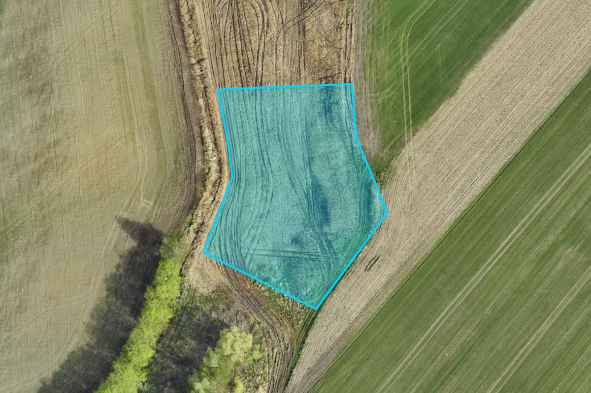

4,143 m² of production-zoned land at the portfolio's lowest entry price. Ideal for a compact facility, satellite operation, or an initial foothold in the A4Corridor with expansion potential through adjacent plots.

Satellite view — Plot 159 (4,143 m²)
The entry plot provides sufficient area for a focused operation with potential for future expansion through adjacent plots:
A production building of 1,500–2,500 m² with access roads, parking, and loading areas. Suitable for specialized manufacturing, precision assembly, or small-batch production operations.
An initial Polish foothold for companies testing the market before committing to larger-scale investment. The entry plot provides a low-capital-risk way to establish corridor presence, with adjacent plots available for expansion.
The entry plot sits within the same corridor zone as the premium plot (143, 9,322 m²) and the flagship plots (133+135/1, 27,384 m²). A buyer acquiring the entry plot today retains the option to expand through subsequent acquisition of nearby parcels — growing from 4,143 m² to up to 40,849 m² within the same corridor area.
This phased approach allows an investor to begin with a €389,000 land investment, validate operations, and scale up as business requirements warrant — all within the same corridor, with the same zoning and infrastructure access.
At €389,000, the entry plot represents the lowest-capital entry point to the A4Corridor. For context:
The entry plot offers corridor access and permanent production zoning at a capital commitment that is modest relative to any meaningful manufacturing investment.
MPZP extract, zoning details, infrastructure proximity data, and detailed pricing for plot 159.
Request Exposé